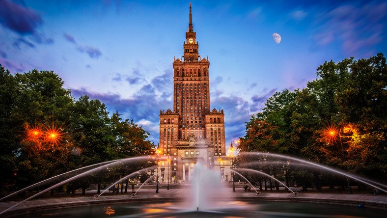

Warszawa
Warszawa
Warszawa, miasto stołeczne Warszawa (m.st. Warszawa) – stolica Polski i województwa mazowieckiego, największe miasto w kraju, położone w jego centralnej części, na Nizinie Środkowomazowieckiej, na Mazowszu, nad Wisłą.
Prawa miejskie uzyskała przed 1300. W 1569 mocą unii lubelskiej Warszawa została ustanowiona miejscem obrad sejmów Rzeczypospolitej Obojga Narodów[a]. Od 1573 odbywały się tam wolne elekcje. Po 1596 do Warszawy przeniesiono dwór królewski i urzędy centralne, a w 1611 w rozbudowanym Zamku Królewskim na stałe zamieszkał król Zygmunt III Waza. Miejsce obrad sejmików generalnych województwa mazowieckiego i sejmików ziemskich ziemi warszawskiej od XVI wieku do pierwszej połowy XVIII wieku.
Warszawa jest największym miastem w Polsce pod względem liczby ludności i powierzchni. Jest również jedynym polskim miastem, którego ustrój jest określony odrębną ustawą. Od 2002 jest gminą miejską mającą status miasta na prawach powiatu. W jej skład wchodzi 18 jednostek pomocniczych – dzielnic m.st. Warszawy.
Warszawa jest ważnym ośrodkiem naukowym, kulturalnym, politycznym oraz gospodarczym. Tutaj znajdują się siedziby m.in. Prezydenta RP, Sejmu i Senatu, Rady Ministrów oraz Narodowego Banku Polskiego. Warszawa jest także siedzibą agencji Frontex, odpowiedzialnej za bezpieczeństwo granic zewnętrznych Unii Europejskiej, oraz Biura Instytucji Demokratycznych i Praw Człowieka (ODIHR), agendy OBWE.
Warszawa została wyróżniona Krzyżem Srebrnym Orderu Wojennego Virtuti Militari, Orderem Krzyża Grunwaldu I klasy, Krzyżem Niepodległości z mieczami i Warszawskim Krzyżem Powstańczym.
W 2020 think tank Globalization and World Cities (GaWC), badający wzajemne stosunki pomiędzy miastami świata w kontekście globalizacji zaliczył Warszawę do kategorii Alpha
